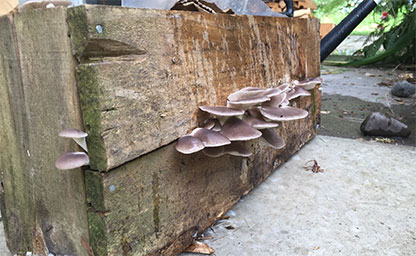
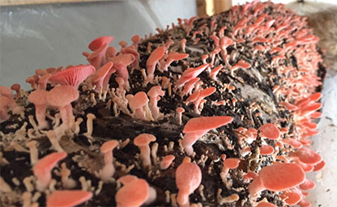
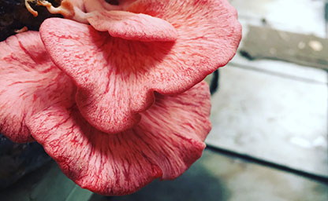
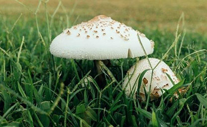

Domesticated 'wild' mushrooms
Our mushrooms occur naturally in the wild but most New Zealanders wouldn't know how to recognise them so they aren't a commmon feature of our diet. European and Asian cultures have included wild mushrooms in their diet for centuries as they knew the health benefits of consuming regular amounts of wild mushrooms. See below for more on the health benefits of wild mushrooms.

Grown on local organic waste
We grow our mushrooms on woodchips from the pruning of urban trees. The raw materials we use are normally treated as organic waste and either used as mulch or converted into compost. We take this raw material and add only water to prepare it for innoculation, no chemicals or sterilising agents are used and via natural processes, the wood biomass is converted into food.

Grown organically
We don't use any pesticides or any other chemicals in our growing process. We do employ several natural methods of pest control such as preying manti but since we grow in a relatively natural environment, we never have too much trouble with insect pests anyway.

By-product is soil
Once our mushrooms have used up all their woodchip biomass, the left-over substance is essentialy composted soil, which can then be used to grow vegetables in. We are working on colaborating with local urban farms to create a dynamic food system in which mushrooms play an integral part.